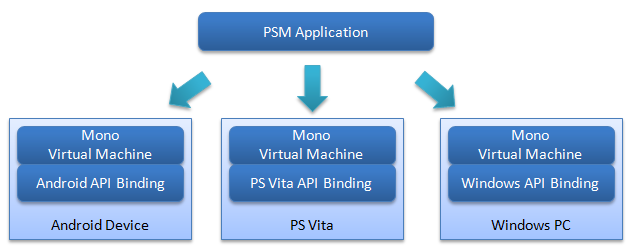

この文書では、PlayStation(R)Mobileの概要について説明します。
Contents
PlayStation(R)Mobile SDK(PlayStation(R)Mobile Software Development Kit)は、複数のプラットフォームで実行可能なアプリケーションの開発環境です。
PSM SDKでは、ひとつのプロジェクト・ひとつのバイナリファイルで、PS VitaやAndroidデバイスなどの異なるデバイスで実行可能なアプリケーションを作成することが可能です。
そのため、開発者は各デバイス毎に異なるコードを書く必要がなく、アプリケーション開発において大幅な効率化を図ることができます。
またPSM SDKは、プロトタイプ開発環境としてWindows上でのシミュレータをサポートしており、各デバイス上で動作させる前に、Windows PC上でシミュレーションしながら効率的に開発を進めることができます。
- PSMアプリはWindows PC上で開発をおこないます。OSはWindows 7とWindows 8をサポートしています。
PSMアプリケーションは以下のデバイスで実行可能です。
- PlayStation(R)Vita
- Androidデバイス (PlayStation(TM)Certified対応デバイス)
- Windows PC(OpenGL 3.0 以上をサポートしたビデオカードが必要。)
※ PlayStation(TM)Certified対応デバイスについては、以下のサイトをご覧ください。
http://www.playstation.com/psm/
- PSM SDKでは統合開発環境PSM Studio上で、C#を用いて開発を行います。
- C#のソースコードはC#コンパイラでマネージドコード(PSMアプリケーション)にコンパイルします。
- 作成されたPSMアプリケーションをPSM Studioから各デバイスに転送します。
- 転送されたPSMアプリケーションを、Monoランタイムと呼ばれる.NET Framework互換の仮想マシンがJITコンパイル(Just In Time Compile)を行い、プログラムを実行します。
図1 PSMアプリケーションと仮想マシン
PSM Studio
統合開発環境(IDE)として、PSM Studioを使用します。
ソースコードの編集、ビルド、デバイスへのPSMアプリの転送、デバッグなどの作業をPSM Studioで一括して行うことができます。
UI Toolkit, PSM UI Composer
UI Toolkit は、PSM 上でユーザーインターフェースを作成するための仕組みやウィジェット(GUI部品)をまとめたライブラリです。
PSM UI Composer (以降、本SDKドキュメントではUI Composerと略記します) は、ユーザーインタフェースのデザインを支援するためのツールで、ボタンやラベルなどのウィジェットをレイアウトしたり、各ウィジェットのプロパティを設定することが可能です。
詳しくは UI Toolkit をご覧ください。
Publishing Utility
Publishing UtilityはPSMアプリのメタデータの設定、マスターパッケージの作成、鍵の管理などをおこなうツールです。
PSM SDKのAPI(Application Programming Interface) は C#ベースのクラスライブラリとして提供されます。
Sce.PlayStation.Coreでは、描画やサウンド再生などのゲーム開発の基盤となるAPIが提供されます。
Sce.PlayStation.HighLevelでは、3Dモデルの描画や物理エンジンといった高度な機能を持つAPIが提供されます。

図2 ライブラリの階層
APIの詳細については APIリファレンスを参照してください。